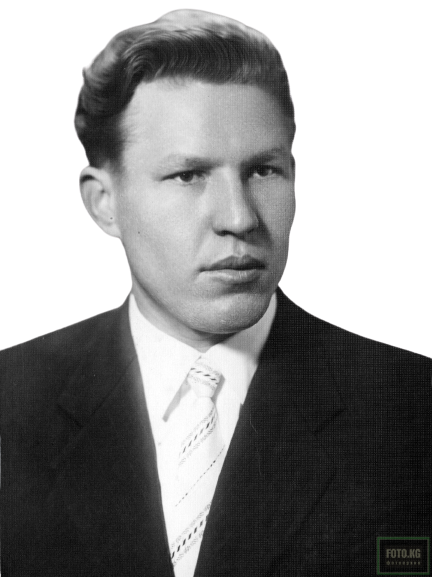

В 2023 году мы празднуем 62 года с первого полёта человека в космос. Человеком, который первым преодолел оковы земного притяжения, стал советский гражданин Юрий Гагарин.
А сам полёт, осуществлённый им,
стал кульминацией масштабного
советского проекта, к которому
приложили свои силы все
советские граждане, включая и
граждан Кыргызской ССР.
Участие Кыргызской ССР в космическом проекте
началось раньше, чем думают. В конце 1959 года
был сформирован первый отряд космонавтов, в
котором было двое кандидатов из Джалал-Абада:

Марс
Рафиков
Валентин
Варламов
Участие соотечественников
из Кыргызской ССР в первом
космическом отряде является
знаковым событием,
свидетельствующим о
масштабной работе,
которую вели
социалистические
республики над космическим
проектом. Территория
Кыргызстана также стала
важным местом для
подготовки космонавтов,
благодаря высокогорной
атмосфере и условиям
тренировок.
Варламов, из-за травмы,
не смог участвовать в
полетах, но продолжал
работать в космической
отрасли. Рафиков же
принимал участие в
подготовке и
осуществлении первого
космического полета.
Однако, в марте 1962
года, он был отчислен из
отряда из-за проблем в
семье. После увольнения
Рафиков продолжал
работать летчиком.